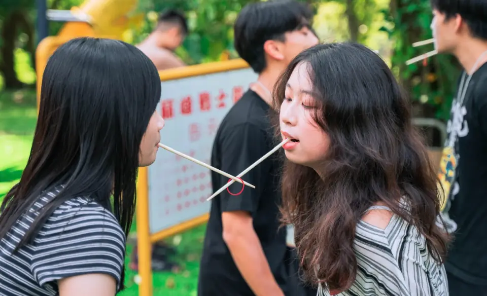
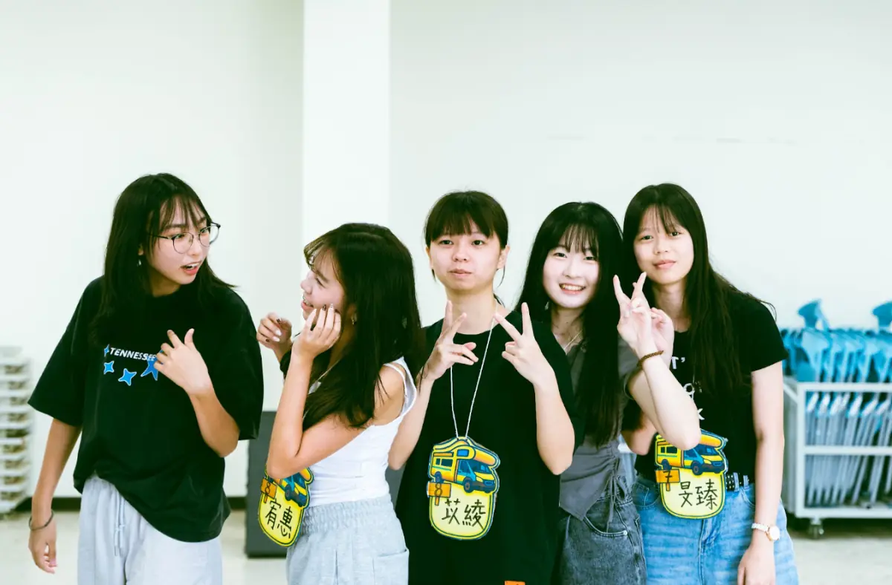
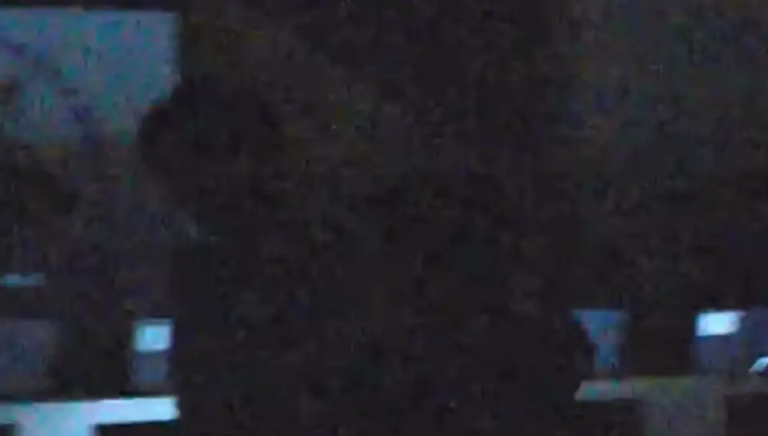
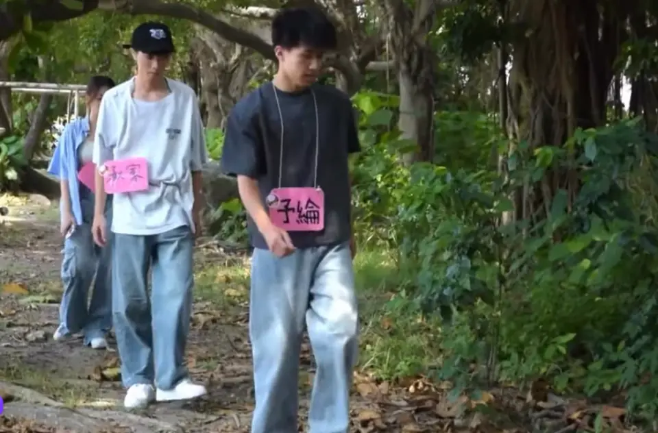
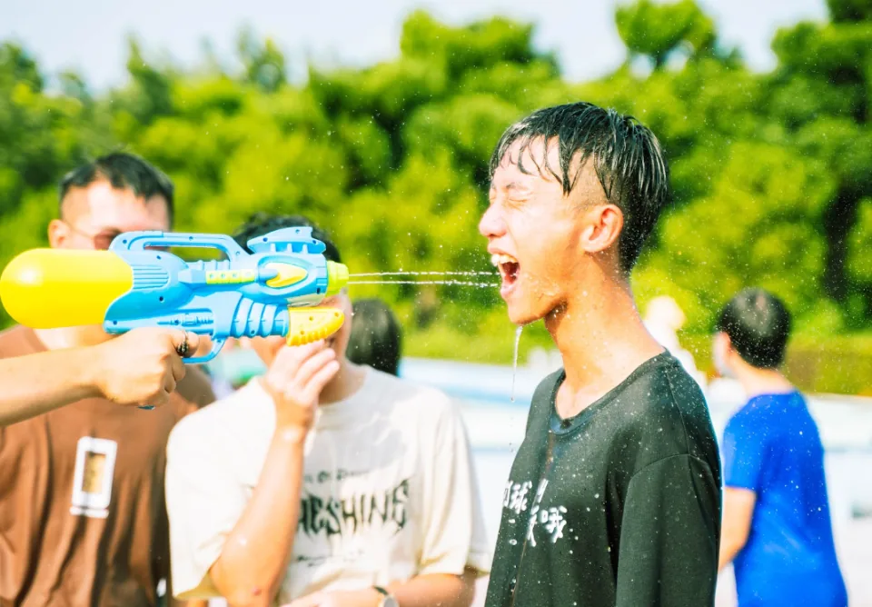
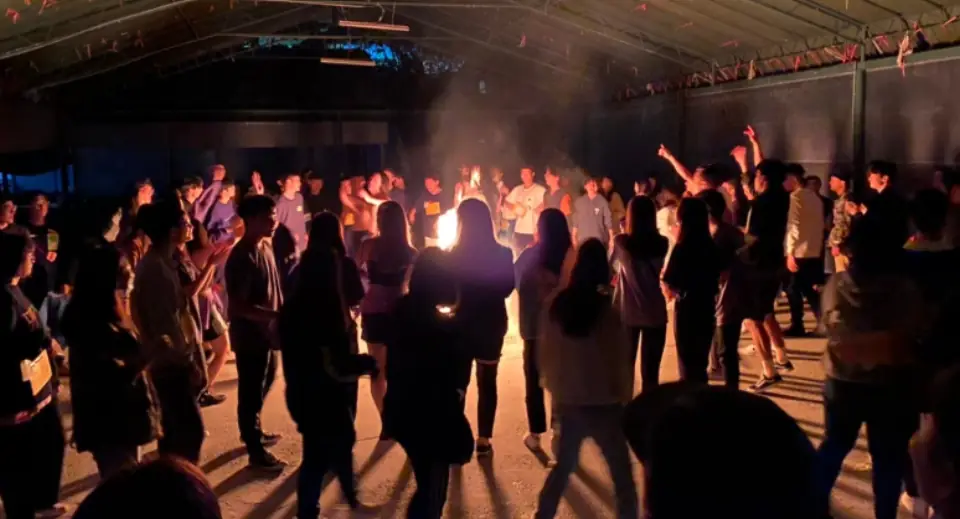
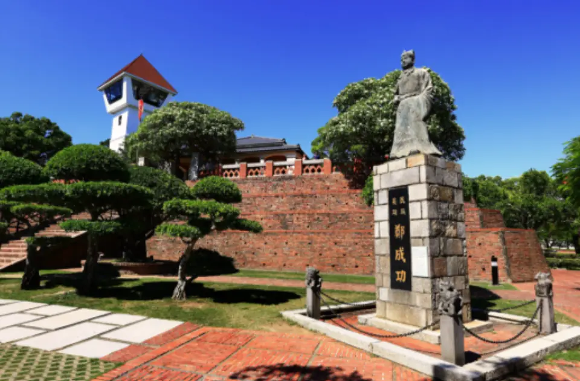

DAY 1
破冰
用輕鬆互動打開第一步，快速記住夥伴，也建立後續活動的安全感。
ACTIVITIES
從輕鬆的第一個招呼，到全力以赴的團隊挑戰，每一個活動都留有剛剛好的空間，讓你和新朋友一起參與。


用輕鬆互動打開第一步，快速記住夥伴，也建立後續活動的安全感。

在夜晚的情境與小隊合作中，創造最容易被記住的共同經驗。

在走馬瀨闖關，結合溝通、策略與體力，讓交流更自然。

用高能量的水上挑戰製造夏日感，也是默契最集中的時刻。

一起完成舞台時刻，把白天累積的熟悉感推向最熱鬧的高潮。

以台南安平收尾，在遊戲與自由活動中留下更生活化的交流時間。